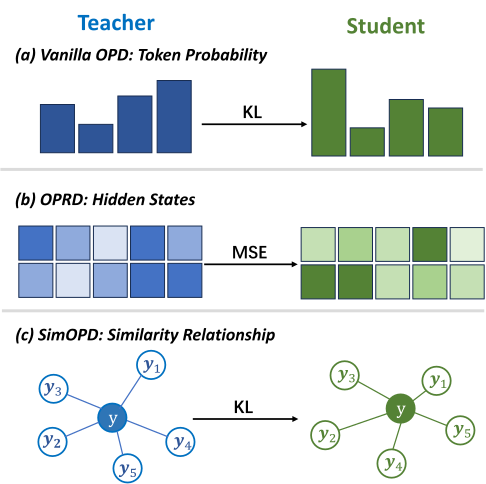
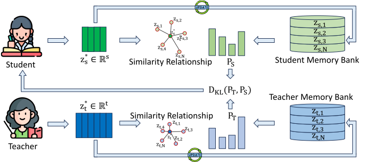
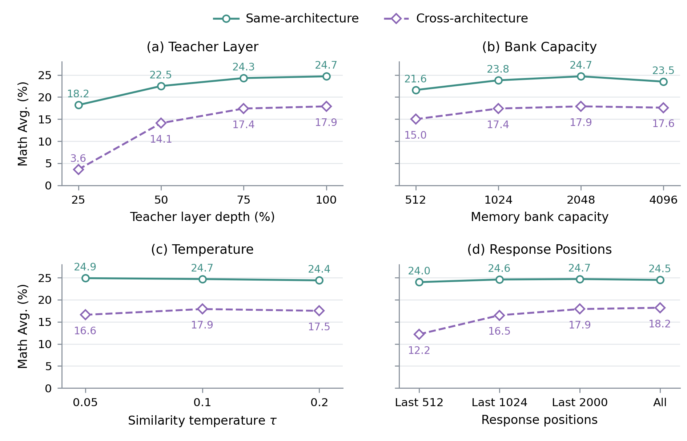

SimOPD：用于同策略蒸馏的关系知识迁移
摘要
同策略蒸馏（OPD）的一个关键挑战是从教师模型的知识中提取有效监督。来自词元概率的监督可能无法充分利用内部知识，而直接匹配隐藏状态会迫使学生模型转向教师模型的特征空间，并使跨架构迁移变得复杂。受对比学习利用实例间关系的启发，我们提出 SimOPD，通过回答之间的相似度迁移教师模型的内部知识。具体而言，SimOPD 使用由学生模型生成的回答构建的成对记忆库，将教师模型内部表征中的监督信息提取为相似度分布。 随后，学生模型在自身的表征空间中匹配这些分布，保留表征自由度，并消除对跨模型投影的需求。 大量实验表明，相较于最强基线，SimOPD 在同架构和跨架构设定下分别将总体平均得分最多提高了 2.6 和 3.1 个百分点。
1 引言
大型语言模型（LLM）取得了显著成功 (Guo et al., 2025; Achiam et al., 2023)，在不同任务和领域中展现出强大的泛化能力 (Brown et al., 2020)。为使这些能力进一步适应下游需求，后训练通常采用监督微调（SFT）和强化学习（RL） (Ouyang et al., 2022; Chung et al., 2024; Guo et al., 2025)。然而，SFT 依赖固定示范，可能存在训练与推理不匹配的问题 (Yan et al., 2026)，而 RL 通常依赖稀疏的结果奖励 (Shao et al., 2024)。为解决这些局限，同策略蒸馏（OPD）使用从学生模型当前策略采样的回答进行训练，并由冻结的教师模型提供密集的词元级监督 (Agarwal et al., 2024)。同策略学习与密集反馈的这种结合，推动了 OPD 在 LLM 后训练中的日益广泛应用 (Yang et al., 2025; Xu et al., 2026)。

在这一范式下，核心问题是如何从教师模型的知识中提取有效监督。近期工作致力于改进词元级监督。例如，ExOPD (Yang et al., 2026b) 相对于 KL 正则化增强了教师模型奖励，PowerOPD (Zhao et al., 2026) 使用幂变换后的概率构造有界奖励，而 OPD² (Heo et al., 2026) 则从经过推理调优的教师模型与其基座模型之间的对数概率差中提取监督。尽管做出了这些改进，这些方法仍然从下一词元概率中获取监督，无法充分传达教师模型内部表征所编码的知识。因此，OPRD (Yang et al., 2026a) 将同策略蒸馏扩展到隐藏状态监督，沿学生模型生成的轨迹匹配归一化后的教师模型与学生模型表征。然而，直接匹配面临两项局限。首先，隐藏维度和表征空间的差异使其跨架构应用变得复杂。OPRD-Bridge 通过可学习的投影和独立的校准阶段解决这一问题。 其次，即使表征具有可比性，直接匹配仍会将学生模型的表征与教师模型的特征空间紧密耦合，迫使学生模型遵循教师模型的编码方式，并限制其表征灵活性。 这些局限促使我们探索一种不同的方式，从教师模型的表征中提取监督，而不将知识迁移与隐藏状态的一致性绑定。
对比学习提供了一个有用的视角：可以通过实例之间的相似性和差异来学习表征 (He et al., 2020; Le-Khac et al., 2020; Liu and Liu, 2021)。受这一视角启发，我们将教师模型定义的学生模型所生成回答之间的关系视为一种监督来源。我们的见解是，教师模型的表征不仅刻画单个问题—回答对，也刻画这些实例之间如何相互关联 (Huh et al., 2024)。这些关系为知识迁移提供了目标，同时允许学生模型保留自身的特征编码。在同策略设定下，我们基于从学生模型当前策略采样的回答构建这种监督，引导学生模型在自身表征空间内保留教师模型定义的相似度结构。
为实现这一思路，我们提出基于相似度的同策略蒸馏（Similarity-based On-Policy Distillation，简称 SimOPD），通过学生模型所生成回答之间的关系迁移教师模型的内部知识。 我们维护两个队列：一个存储教师模型对历史回答的表征，另一个则以相同顺序存储学生模型对这些相同回答的表征。对于新生成的回答，每个模型将其当前表征与自身队列中存储的表征进行比较。由此得到一个相似度分布，描述当前回答与各个历史回答之间的关系。由于队列中对应的条目表示同一个回答，因此，即使教师模型和学生模型的特征空间不同，也可以直接比较它们的相似度分布。我们训练学生模型来匹配教师模型的分布，并将当前这对表征加入队列，用于后续比较。通过这种方式，SimOPD 利用了词元概率之外的教师模型内部知识，同时保留了学生模型的表征自由度。数学推理和代码生成方面的大量实验表明，相较于最强基线，我们的工作在同架构和跨架构设定下分别将总体平均性能提高了 2.6% 和 3.1%。

2 预备知识
我们考虑一个可训练的学生模型 和一个冻结的教师模型 ，二者共享词表 。给定提示 ，学生模型生成回答 。教师模型的监督在这些学生模型生成的轨迹上进行评估。
2.1 输出空间中的同策略蒸馏
OPD 在学生模型自身生成的前缀上，对其下一词元预测进行监督 (Agarwal et al., 2024)。令 ，。反向 KL 目标为
| (1) |
其中，期望取遍提示和学生模型生成的回答。在采用 RL 形式的实现中，教师模型通过对数概率差提供词元级奖励：
| (2) |
使用相应的策略梯度训练学生模型：
| (3) |
2.2 同策略表征蒸馏
OPRD 则在相同的生成轨迹上监督学生模型的隐藏状态 (Yang et al., 2026a)。令 和 表示在第 层和回答位置 处具有可比性的学生模型与教师模型表征。使用归一化状态 ，我们将每个位置的表征误差定义为
| (4) |
OPRD 目标对受监督位置和层上的这一误差取平均：
| (5) |
其中， 包含受监督的层， 表示回答位置 是否受到监督， 表示停止梯度算子。当隐藏空间不兼容时，OPRD-Bridge 引入额外的校准训练阶段，使表征具有可比性。
3 方法
本节介绍 SimOPD，一种基于相似度的同策略表征蒸馏框架。如图 2 所示，SimOPD 首先构建成对的教师模型和学生模型动态记忆库，然后通过匹配存储回答上的相似度分布来迁移教师模型的内部知识。
3.1 双记忆库构建
回答表征提取。
对于给定模型和学生模型生成的回答 ，令 表示第 层、第 个所选回答位置处的隐藏状态。沿用第 2 节的定义，我们将归一化隐藏状态定义为 。给定选定的层集合 ，回答表征为 ，其中 是所选回答位置的数量。这将归一化隐藏状态聚合为单个回答表征，用于与历史回答进行比较。
双记忆库初始化。
使用上述回答表征，我们构建教师模型记忆库 和学生模型记忆库 ，每个记忆库的容量均为 。两个记忆库以相同顺序存储同一组 个历史回答的表征，其中 和 对应于回答 。这种对应关系提供了共享的回答索引，而独立的记忆库允许在各模型自身的特征空间内进行相似度比较，从而实现无需跨模型投影的跨架构蒸馏。为初始化这一共享参考集，我们使用第一个训练批次填充初始为空的记忆库，而不更新学生模型参数。
动态记忆库更新。
在每次训练更新期间，已存储的表征保持固定。更新学生模型后，我们将事先提取的成对表征以相同顺序追加到两个记忆库中。当超出容量时，按照先进先出规则移除最早的表征对。这些成对更新使用学生模型生成的回答持续更新共享的历史参考，用于后续基于相似度的蒸馏。
3.2 基于相似度的蒸馏
相似度分布。
使用双记忆库，我们通过学生模型新生成的每个回答 与历史回答之间的相似度关系来刻画该回答。具体而言，对于每个模型 ，我们计算其当前回答表征与每个已存储表征之间的余弦相似度 。随后，将这些相似度转换为 个历史回答上的分布：
| (6) |
其中， 为温度。由于两个记忆库中相互对应的条目指向同一回答， 和 描述了与同一参考集的关系，因此即使模型的表征空间不同，也可以直接比较这两个分布。
蒸馏目标。
为迁移这些回答关系，我们使用教师模型的相似度分布作为软目标，并通过最小化以下目标来训练学生模型：
| (7) |
其中，期望取遍提示和从学生模型当前策略采样的回答。在优化过程中，教师模型和记忆库中存储的表征保持固定，而梯度通过当前学生模型表征传播。动态记忆库和相似度匹配目标共同使 SimOPD 能够通过回答关系迁移教师模型的内部知识，将监督扩展到词元概率之外，同时保留学生模型的表征自由度。
4 实验
4.1 设置
实现细节。
我们的实现基于 verl (Sheng et al., 2025)，并使用 vLLM 进行同策略生成。同架构蒸馏采用 Qwen3-4B Qwen3-4B-Base，跨架构蒸馏采用 Qwen3-8B Qwen3-1.7B-Base (Yang et al., 2025)。数学推理和代码生成分别使用 DAPO-Math-17K (Yu et al., 2026) 与 Eurus 去重后的编程子集 (Cui et al., 2025; Yuan et al., 2024) 进行训练。对于 SimOPD，我们从回答末尾最多 2,000 个词元提取最后一层表征，将每个记忆库的容量设为 ，并使用共同的相似度温度 。更多实现细节见附录。
评估。
基线。
我们将 SimOPD 与六种蒸馏基线比较：(1) 采样词元 OPD (Agarwal et al., 2024) 使用教师模型与学生模型在学生采样词元上的对数概率差。(2) Top- OPD (Agarwal et al., 2024) 在学生模型概率最高的 top- 个词元上计算蒸馏损失，实验中将 设为 16。(3) ExOPD (Yang et al., 2026b) 相对于参考策略的 KL 正则化，加强来自教师模型的奖励。(4) PowerOPD (Zhao et al., 2026) 通过对教师模型和学生模型的概率进行幂变换，构造有界奖励。(5) OPD2 (Heo et al., 2026) 从教师模型与其预训练基座模型之间的对数概率差中提取监督，并采用奖励中心化和符号一致性门控。(6) OPRD (Yang et al., 2026a) 沿学生生成的轨迹匹配归一化后的教师模型与学生模型隐藏状态，在跨架构设置下使用 OPRD-Bridge。此外，对于基于表征的方法 OPRD 和 SimOPD，我们还评估与采样词元 OPD 损失的联合训练，并将 OPD 损失系数设为 。
4.2 主要结果
| Method | Mathematical Reasoning | Code Generation | Overall | ||||||
|---|---|---|---|---|---|---|---|---|---|
| AIME24 | AIME25 | AIMO | Avg. | HumanEval | LeetCode | MBPP | Avg. | ||
| Teacher | 25.8 | 17.5 | 59.0 | 34.1 | 87.8 | 73.3 | 70.4 | 77.2 | 55.6 |
| Initial Student | 7.4 | 5.1 | 27.1 | 13.2 | 57.9 | 43.2 | 40.4 | 47.2 | 30.2 |
| OPD (sampled-token) | 9.4 | 8.3 | 37.2 | 18.3 | 77.2 | 40.4 | 71.2 | 62.9 | 40.6 |
| OPD (top-) | 9.0 | 8.5 | 35.9 | 17.8 | 75.8 | 40.5 | 67.1 | 61.1 | 39.5 |
| ExOPD | 11.7 | 13.3 | 42.2 | 22.4 | 81.1 | 41.7 | 67.7 | 63.5 | 43.0 |
| PowerOPD | 16.7 | 11.7 | 44.9 | 24.4 | 72.5 | 33.9 | 64.9 | 57.1 | 40.8 |
| OPD2 | 12.2 | 14.2 | 42.3 | 22.9 | 78.0 | 35.6 | 67.2 | 60.3 | 41.6 |
| OPRD | 12.5 | 7.5 | 40.9 | 20.3 | 79.3 | 37.2 | 62.2 | 59.6 | 39.9 |
| + OPD | 13.1 | 12.5 | 40.9 | 22.2 | 79.7 | 41.9 | 67.3 | 63.0 | 42.6 |
| SimOPD (ours) | 15.6 | 14.8 | 43.7 | 24.7 | 84.2 | 43.9 | 67.9 | 65.3 | 45.0 |
| + OPD | 15.8 | 15.3 | 44.1 | 25.1 | 83.9 | 44.2 | 70.2 | 66.1 | 45.6 |
| Method | Mathematical Reasoning | Code Generation | Overall | ||||||
|---|---|---|---|---|---|---|---|---|---|
| AIME24 | AIME25 | AIMO | Avg. | HumanEval | LeetCode | MBPP | Avg. | ||
| Teacher | 25.8 | 20.8 | 58.4 | 35.0 | 88.4 | 68.9 | 70.9 | 76.1 | 55.5 |
| Initial Student | 0.8 | 0.8 | 11.7 | 4.4 | 61.4 | 21.8 | 52.2 | 45.1 | 24.8 |
| OPD (sampled-token) | 4.2 | 3.7 | 23.5 | 10.5 | 64.0 | 23.3 | 53.4 | 46.9 | 28.7 |
| OPD (top-) | 5.0 | 4.3 | 22.9 | 10.7 | 61.9 | 22.0 | 53.5 | 45.8 | 28.3 |
| ExOPD | 7.5 | 4.2 | 22.8 | 11.5 | 62.8 | 21.7 | 53.1 | 45.9 | 28.7 |
| PowerOPD | 11.2 | 5.6 | 33.8 | 16.9 | 63.4 | 18.9 | 56.4 | 46.2 | 31.6 |
| OPD2 | 6.7 | 1.7 | 22.9 | 10.4 | 69.5 | 26.8 | 57.4 | 51.2 | 30.8 |
| OPRD-Bridge | 8.8 | 8.3 | 33.6 | 16.9 | 63.8 | 21.7 | 52.4 | 46.0 | 31.4 |
| + OPD | 9.1 | 8.0 | 33.4 | 16.8 | 66.2 | 21.8 | 54.9 | 47.6 | 32.2 |
| SimOPD (ours) | 10.7 | 8.3 | 34.6 | 17.9 | 72.6 | 26.7 | 49.1 | 49.5 | 33.7 |
| + OPD | 11.9 | 8.3 | 35.5 | 18.6 | 72.5 | 27.1 | 56.6 | 52.1 | 35.3 |
我们在同架构和跨架构蒸馏设置下评估 SimOPD 的数学推理与代码生成能力，各领域分别独立训练。表 1 和 2 显示，在全部四种设置中，SimOPD 均位列单独使用的方法中的前二，其中三种设置排名第一，并在两组模型组合上都取得最高的 Overall 分数。此外，加入采样词元 OPD 后，在全部四种设置下均取得最高的领域平均分。
同架构结果。
相较最强基线 PowerOPD 和 ExOPD，SimOPD 将数学推理和代码生成平均分分别提高 0.3 和 1.8 个百分点，达到 24.7 和 65.3。 尽管两个领域中领先的基线不同，SimOPD 在两者上均表现出色，取得单独使用方法中最高的 Overall 分数 45.0，比 ExOPD 高 2.0 个百分点。值得关注的是，SimOPD 在数学和代码生成上还分别超过 OPRD 4.4 和 5.7 个百分点，表明匹配回答相似度优于直接匹配隐藏状态。在这些增益基础上，加入采样词元 OPD 将两个领域的平均分提高到 25.1 和 66.1，并将 Overall 分数提高到 45.6，超过最强基线 2.6 个百分点。在代码生成中，这一额外监督尤其改善了 MBPP，将其分数从 67.9 提高到 70.2，同时保持了 HumanEval 和 LeetCode 上的良好表现。两个领域的改善均支持将基于相似度的监督与直接词元级反馈结合。
跨架构结果。
相较最强基线 PowerOPD 和 OPRD-Bridge，SimOPD 将数学推理平均分提高 1.0 个百分点，达到 17.9，在单独使用的方法中排名第一。 同时，它在单独使用的方法中，代码生成排名第二，HumanEval 分数达到 72.6，超过最强基线 OPD2 3.1 个百分点。这些增益共同带来单独使用方法中最高的 Overall 分数 33.7，比 OPRD-Bridge+OPD 高 1.5 个百分点。这些结果支持以下方法的有效性：在各模型自身的表征空间内计算相似度，以此在不同模型容量之间迁移教师模型的内部知识。然而，SimOPD 在 MBPP 上出现性能下降，我们将其归因于该基准任务相对简单，且对输出格式敏感。附录 B 提供了详细分析。此外，加入 OPD 将数学推理和代码生成平均分提高到 18.6 和 52.1，分别超过最强基线 1.7 和 0.9 个百分点。因此，Overall 分数达到 35.3，领先最强基线的幅度扩大到 3.1 个百分点。相较单独使用 SimOPD，联合训练将代码生成和数学分数分别提高 2.6 和 0.7 个百分点，说明直接词元级反馈对这一较小学生模型的代码生成提供了尤其有用的互补监督。
这些结果支持跨架构的关系知识迁移，以及它与词元级监督之间的互补性。
4.3 进一步分析
4.3.1 消融研究
我们考察三种 SimOPD 变体，以评估其记忆库和蒸馏目标。批内匹配用当前批次中的成对教师模型与学生模型表征替代历史记忆库，同时保留 KL 目标。相似度回归保留双记忆库，但对教师模型和学生模型与对应历史回答之间的余弦相似度应用 MSE。单记忆库将教师记忆库作为两个模型的共享参照。在跨架构设置中，使用 MLP 将学生查询映射到教师模型的表征维度。 表 3 支持历史参照与分布匹配的益处。 相较批内匹配，历史记忆库在同架构和跨架构设置下分别将平均分提高 1.9 和 5.5 个百分点，凸显历史比较的价值，尤其对于异构模型。 同时，相似度回归比 SimOPD 分别低 1.5 和 0.7 个百分点，说明归一化相似度分布优于直接回归余弦值。最后，单记忆库将同架构平均分降至 22.8，表明即使隐藏维度相同，独立的参照空间仍然有益。综合而言，这些结果支持通过成对历史表征匹配回答关系，而非使用共享特征空间或原始相似度分数。
(a) Same-architecture
Qwen3-4B Qwen3-4B-Base
| Method | AIME24 | AIME25 | AIMO | Avg. |
|---|---|---|---|---|
| SimOPD | 15.6 | 14.8 | 43.7 | 24.7 |
| In-Batch Matching | 14.7 | 12.5 | 41.3 | 22.8 |
| Similarity Regression | 15.2 | 11.9 | 42.5 | 23.2 |
| Single Memory Bank | 13.6 | 12.7 | 42.2 | 22.8 |
(b) Cross-architecture
Qwen3-8B Qwen3-1.7B-Base
| Method | AIME24 | AIME25 | AIMO | Avg. |
|---|---|---|---|---|
| SimOPD | 10.7 | 8.3 | 34.6 | 17.9 |
| In-Batch Matching | 5.0 | 3.3 | 28.8 | 12.4 |
| Similarity Regression | 9.8 | 8.1 | 33.6 | 17.2 |
| Single Memory Bank | 0.3 | 0.3 | 9.2 | 3.3 |
4.3.2 敏感性分析
我们在同架构和跨架构数学推理设置下考察四个因素，在相同训练预算与评估协议下，每次只改变一个因素。教师层分别取 25%、50%、75% 和 100% 深度处，同时保留学生模型的最后一层。我们还改变记忆库容量 、相似度温度 ，以及回答覆盖范围，分别取最后 512、1,024、2,000 个词元或全部回答词元。
教师层选择。
图 3 显示，使用更深的教师层能够持续改善性能，但接近最后一层时增益递减。从 25% 深度增加到 100%，在同架构和跨架构设置下分别将平均分提高 6.5 和 14.3 个百分点。这说明，较后层的表征能够更有效地提供教师模型内部的有用知识，尤其是在教师模型与学生模型容量不同时。
记忆库容量。
对于测试中满足 的记忆库容量，SimOPD 相对不敏感，使用紧凑的历史参照集合即可保持良好性能。 容量为 1,024 的记忆库仅需一半的参照缓存存储空间，其表现与容量为 2,048 的基线相比，在同架构和跨架构设置下分别相差不超过 0.9 和 0.5 个百分点。 此外，将容量增加到 4,096，在两种设置下都未带来进一步的性能提升。这些结果表明，迁移教师模型的内部知识并不需要庞大的参照缓存，因此有望应用于更大规模的场景，而不必让缓存存储空间按比例增长。
相似度温度。
在测试的温度范围内，SimOPD 表现出较强稳健性：同架构和跨架构设置下，平均分的变化幅度分别仅为 0.5 和 1.3 个百分点。尽管温度会改变相似度分布的尖锐程度，这些选择下都能保持教师模型内部知识的有效迁移。两组模型组合均表现出这种稳定性，为温度选择提供了灵活性，说明在所测试范围内，对精确调优的依赖有限。
回答覆盖范围。
将覆盖范围从最后 512 个词元扩展到最后 2,000 个词元，分别提高性能 0.7 和 5.7 个百分点，说明跨架构蒸馏对此更敏感。不过，在两种设置下，最后 2,000 个词元的表现与完整回答池化的差距均不超过 0.3 个百分点。由于较后位置的隐藏状态以前文为条件，它们可以保留所选后缀以外的有用信息，这有助于解释为何该覆盖范围能够捕获足够的教师模型内部知识，从而进行有效蒸馏。

4.3.3 域外泛化
为评估训练领域之外的泛化能力，我们在 ARC-C (Clark et al., 2018)、GPQA (Rein et al., 2023) 和 MMLU-Pro (Wang et al., 2024) 上，评估数学推理蒸馏后得到的检查点。这些基准分别涵盖学校阶段的科学问题、研究生水平的科学推理，以及跨学科知识与推理。
| Method | ARC-C | GPQA | MMLU-Pro | Avg. |
|---|---|---|---|---|
| Initial Student | 31.0 | 14.1 | 32.5 | 25.9 |
| OPD | 67.6 | 21.5 | 43.5 | 44.2 |
| PowerOPD | 68.2 | 23.4 | 51.3 | 47.6 |
| OPD2 | 61.7 | 21.8 | 44.9 | 42.8 |
| SimOPD (ours) | 72.3 | 23.4 | 50.7 | 48.8 |
如表 4 所示，所有被评估的蒸馏方法都在三个基准上优于初始学生模型。SimOPD 将平均分从 25.9 提高到 48.8，表明它在目标任务上的增益伴随着这些域外基准上的性能改善。此外，它在平均分上超过最强基线 PowerOPD 1.2 个百分点：在 ARC-C 上提高 4.1 个百分点，在 GPQA 上与其持平，但在 MMLU-Pro 上落后 0.6 个百分点。尽管训练并未直接优化这些基准，SimOPD 仍取得最高的域外平均分，支持基于相似度的知识迁移具有更广泛的泛化益处。
5 相关工作
5.1 同策略蒸馏
同策略蒸馏利用教师模型的反馈，从学生生成的回答中学习。GKD 在这些回答上探索不同的散度目标 (Agarwal et al., 2024)，MiniLLM 则通过策略梯度优化反向 KL (Gu et al., 2024)。在这一范式基础上，近期方法进一步改进词元级监督：ExOPD 相对于 KL 正则化加强教师奖励 (Yang et al., 2026b)，PowerOPD 通过概率变换构造有界奖励 (Zhao et al., 2026)，OPD2 则通过微调后教师模型与其基座模型之间的对数概率差，分离出与推理相关的监督 (Heo et al., 2026)。尽管这些方法的构造不同，其监督都源自下一词元概率。 OPRD 将这一范式扩展到内部表征，沿学生生成的轨迹匹配归一化后的教师模型与学生模型隐藏状态 (Yang et al., 2026a)。对于异构模型，OPRD-Bridge 引入经过校准的投影来实现表征匹配。SimOPD 同样从教师表征中提取监督，但通过成对记忆库迁移回答之间的相似度。 通过在各模型自身的表征空间内比较回答，SimOPD 无需学习跨模型投影。
5.2 LLM 表征研究
我们的方法受到表征学习领域成熟方法的启发，包括保持相似度的知识蒸馏（Similarity-Preserving Knowledge Distillation）和 CompRess (Tung and Mori, 2019; Abbasi Koohpayegani et al., 2020)。 类似地，越来越多工作将成熟的表征技术用于 LLM 学习和评估。Minitron 研究通过中间状态蒸馏来恢复剪枝后模型的能力 (Muralidharan et al., 2024)。在 RLVR 中，Hidden-Align 对齐正确采样轨迹的表征 (Wang et al., 2026)，SHEAR 则利用隐藏状态的分布差异进行信用分配 (Chen et al., 2026)。同时，GeoMin 利用表征几何来评估伪标签可靠性并选择训练样本 (Zhu et al., 2026)，INSIDE 则通过回答嵌入的协方差谱检测幻觉 (Chen et al., 2024)。沿着这一研究方向，SimOPD 将基于相似度的蒸馏应用于同策略语言生成，通过学生生成回答之间的相似度迁移教师模型的内部知识。
6 结论
我们提出了 SimOPD，这是一种通过学生生成回答之间的相似度，迁移教师模型内部知识的同策略蒸馏方法。其成对记忆库能够在各模型自身的表征空间内匹配相似度分布，保留学生模型的表征自由度，并在无需跨模型投影的情况下支持不同隐藏维度。数学推理与代码生成实验表明，该方法在同架构和跨架构设置下均表现良好，与词元级 OPD 结合还能获得进一步增益。同时，消融研究支持其记忆库设计与蒸馏目标。这些发现表明，回答相似度是一种有效的监督来源，可用于利用词元概率之外的教师模型内部知识。
局限性
我们的评估主要覆盖数学推理和代码生成等推理任务。对开放式生成和其他模态的适用性仍有待研究。 相比采样词元监督，基于表征的关系蒸馏需要额外的隐藏状态处理与跨回答相似度计算。这种结构性开销限制了当前实现的训练效率，因此需要进一步优化表征提取和关系构建。记忆库管理也存在探索空间，包括其他初始化方案、记忆库预热计划和更新策略。最后，额外正则化在表征学习和相似度匹配中的作用尚未得到系统研究。
参考文献
- Compress: self-supervised learning by compressing representations. Advances in neural information processing systems 33, pp. 12980–12992. Cited by: §5.2.
- Gpt-4 technical report. arXiv preprint arXiv:2303.08774. Cited by: §1.
- On-policy distillation of language models: learning from self-generated mistakes. In International Conference on Learning Representations, Vol. 2024, pp. 21246–21263. Cited by: §1, §2.1, §4.1, §5.1.
- Program synthesis with large language models. arXiv preprint arXiv:2108.07732. Cited by: §4.1.
- Language models are few-shot learners. Advances in neural information processing systems 33, pp. 1877–1901. Cited by: §1.
- INSIDE: llms’ internal states retain the power of hallucination detection. In International Conference on Learning Representations, Vol. 2024, pp. 3056–3076. Cited by: §5.2.
- Evaluating large language models trained on code. arXiv preprint arXiv:2107.03374. Cited by: §4.1.
- Hidden states know where reasoning diverges: credit assignment via span-level wasserstein distance. arXiv preprint arXiv:2604.23318. Cited by: §5.2.
- Scaling instruction-finetuned language models. Journal of machine learning research 25 (70), pp. 1–53. Cited by: §1.
- Think you have solved question answering? try arc, the ai2 reasoning challenge. arXiv preprint arXiv:1803.05457. Cited by: §4.3.3.
- Process reinforcement through implicit rewards. arXiv preprint arXiv:2502.01456. Cited by: §4.1.
- Minillm: knowledge distillation of large language models. In International Conference on Learning Representations, Vol. 2024, pp. 32694–32717. Cited by: §5.1.
- Deepseek-r1: incentivizing reasoning capability in llms via reinforcement learning. arXiv preprint arXiv:2501.12948. Cited by: §1.
- DeepSeek-Coder: when the large language model meets programming—the rise of code intelligence. arXiv preprint arXiv:2401.14196. Cited by: §4.1.
- Momentum contrast for unsupervised visual representation learning. In 2020 IEEE/CVF conference on computer vision and pattern recognition (CVPR), pp. 9726–9735. Cited by: §1.
- On-policy delta distillation. arXiv preprint arXiv:2607.15161. Cited by: §1, §4.1, §5.1.
- The platonic representation hypothesis. arXiv preprint arXiv:2405.07987. Cited by: §1.
- Contrastive representation learning: a framework and review. Ieee Access 8, pp. 193907–193934. Cited by: §1.
- Numinamath: the largest public dataset in ai4maths with 860k pairs of competition math problems and solutions. Hugging Face repository 13 (9), pp. 9. Cited by: §4.1.
- SimCLS: a simple framework for contrastive learning of abstractive summarization. In Proceedings of the 59th Annual Meeting of the Association for Computational Linguistics and the 11th International Joint Conference on Natural Language Processing (Volume 2: Short Papers), pp. 1065–1072. Cited by: §1.
- Decoupled weight decay regularization. arXiv preprint arXiv:1711.05101. Cited by: 附录 A.
- Compact language models via pruning and knowledge distillation. Advances in Neural Information Processing Systems 37, pp. 41076–41102. Cited by: §5.2.
- Training language models to follow instructions with human feedback. Advances in neural information processing systems 35, pp. 27730–27744. Cited by: §1.
- Gpqa: a graduate-level google-proof q&a benchmark. arXiv preprint arXiv:2311.12022. Cited by: §4.3.3.
- Deepseekmath: pushing the limits of mathematical reasoning in open language models. arXiv preprint arXiv:2402.03300. Cited by: §1.
- Hybridflow: a flexible and efficient rlhf framework. In Proceedings of the Twentieth European Conference on Computer Systems, pp. 1279–1297. Cited by: §4.1.
- Similarity-preserving knowledge distillation. In Proceedings of the IEEE/CVF international conference on computer vision, pp. 1365–1374. Cited by: §5.2.
- Mmlu-pro: a more robust and challenging multi-task language understanding benchmark. Advances in Neural Information Processing Systems 37, pp. 95266–95290. Cited by: §4.3.3.
- Right makes might: aligning verified hidden states empowers rl reasoning. arXiv preprint arXiv:2606.03234. Cited by: §5.2.
- Deepseek-v4: towards highly efficient million-token context intelligence. arXiv preprint arXiv:2606.19348. Cited by: §1.
- Distribution-aligned sequence distillation for superior long-cot reasoning. arXiv preprint arXiv:2601.09088. Cited by: §1.
- Qwen3 technical report. arXiv preprint arXiv:2505.09388. Cited by: §1, §4.1.
- OPRD: on-policy representation distillation. arXiv preprint arXiv:2606.06021. Cited by: §1, §2.2, §4.1, §4.1, §5.1.
- Learning beyond teacher: generalized on-policy distillation with reward extrapolation. arXiv preprint arXiv:2602.12125. Cited by: §1, §4.1, §5.1.
- Dapo: an open-source llm reinforcement learning system at scale. Advances in Neural Information Processing Systems 38, pp. 113222–113244. Cited by: §4.1.
- Free process rewards without process labels. arXiv preprint arXiv:2412.01981. Cited by: §4.1.
- PowerOPD: stabilizing on-policy distillation with bounded power transformation. arXiv preprint arXiv:2606.17199. Cited by: §1, §4.1, §5.1.
- GeoMin: data-efficient semi-supervised rlvr via geometric distribution modeling. arXiv preprint arXiv:2606.04516. Cited by: §5.2.
附录 A 补充实现细节
在两个领域中，我们均使用八块 NVIDIA A100 80GB GPU 训练 200 步，采用 AdamW (Loshchilov and Hutter, 2017)，学习率为 ，全局批量大小为 16 个回答，每块 GPU 的 actor 微批量大小为 1。训练前过滤长度超过 3,072 个词元的提示，采样轨迹生成使用 top-。每批包含八个提示，每个提示在温度 下采样两个回答，采用非思考模式提示，最大回答长度为 4,096 个词元。
关于基线配置，我们遵循各基线原始的公式与模型角色定义，并将其适配到共同的教师—学生模型组合。ExOPD 使用奖励权重 ，并以初始学生模型作为参考模型；PowerOPD 使用幂指数 。对于 OPD2，我们使用教师模型对应的基座模型，以学生模型概率最高的 top-1024 个词元进行奖励中心化，并将奖励缩放系数设为 。OPRD 对回答最后 2,000 个词元的所有层进行监督，OPRD-Bridge 使用秩为 8 的投影。为进行受控比较，所有方法均训练 200 步，且不使用学习率预热。
附录 B MBPP 错误分析
我们将 MBPP 中的错误回答分为格式错误和执行失败，其中后者涵盖排除格式错误后剩余的错误回答。
| Method | Accuracy | Format errors | Execution failures |
|---|---|---|---|
| OPD | 53.40 | 14.50 | 32.10 |
| ExOPD | 53.10 | 15.30 | 31.60 |
| PowerOPD | 56.40 | 2.01 | 41.59 |
| OPD2 | 57.40 | 1.75 | 40.85 |
| SimOPD | 49.10 | 23.60 | 27.30 |
| + OPD | 56.60 | 13.20 | 30.20 |
表 5 表明，格式合规性是 SimOPD 在 MBPP 上的关键瓶颈。相比 OPD，SimOPD 的格式错误多 9.1 个百分点，但执行失败少 4.8 个百分点，最终准确率低 4.3 个百分点。加入 OPD 将格式错误从 23.6% 大幅降至 13.2%，并将准确率提高 7.5 个百分点。综合而言，这些结果表明，在学习 MBPP 所要求的输出规范方面，直接词元级监督明显优于间接表征监督，因而支持将二者联合使用。
附录 C 训练效率。
我们在从 Qwen3-4B 到 Qwen3-4B-Base 的同架构蒸馏设置下，评估数学推理的训练效率，使用八块 NVIDIA A100 80GB GPU。我们报告每个训练步的平均实际耗时，以及每块 GPU 的峰值显存，并取八块 GPU 中最大的峰值。所有方法使用相同的硬件、批量大小和回答长度上限。测量不包括前五个预热步骤、评估和检查点保存。
| Method | Time/step (s) | Peak memory (GB/GPU) |
|---|---|---|
| ExOPD | 70.25 | 76.45 |
| PowerOPD | 66.92 | 76.39 |
| OPD2 | 73.69 | 79.69 |
| OPRD | 83.04 | 77.56 |
| SimOPD (ours) | 87.20 | 78.77 |
如表 6 所示，SimOPD 相较基于表征的 OPRD 基线，将数学推理平均分提高 4.4 个百分点，每步耗时 87.20 秒，训练时间增加 5.0%。同时，其每块 GPU 的峰值显存为 78.77 GB，仍处于基线的 76.39–79.69 GB 范围内。因此，相较直接匹配隐藏状态，SimOPD 以适度增加的训练成本取得了更强的蒸馏性能。此外，记忆库仅在训练期间使用，不影响学生模型的架构和推理过程。